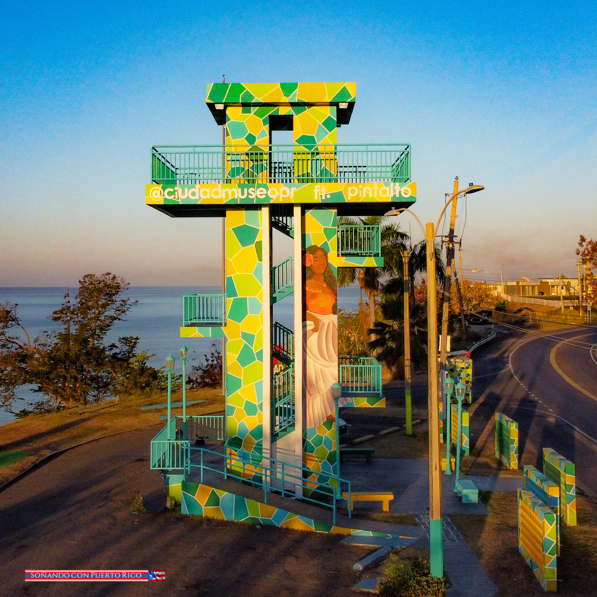
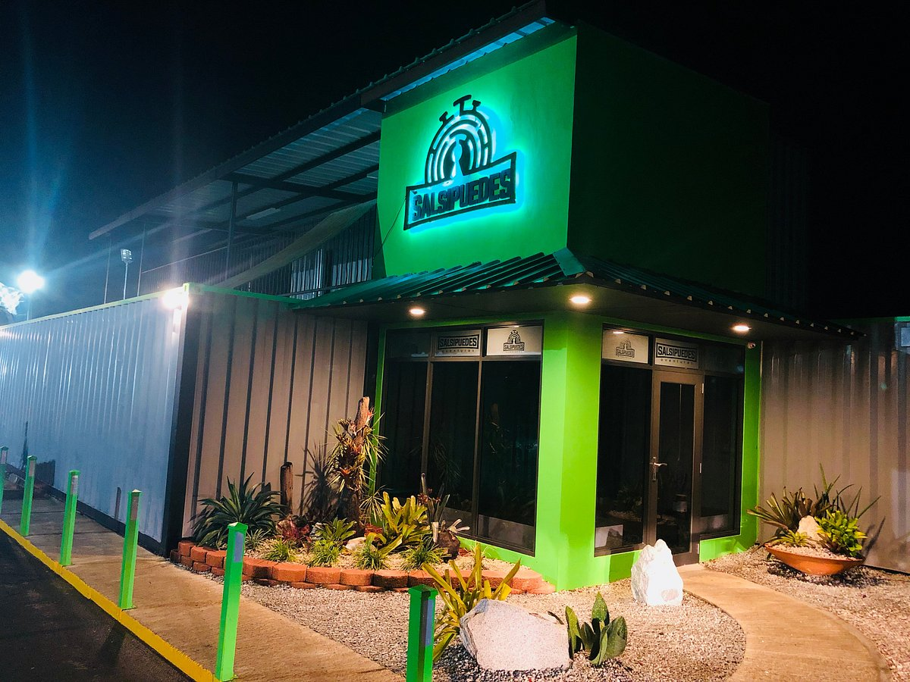
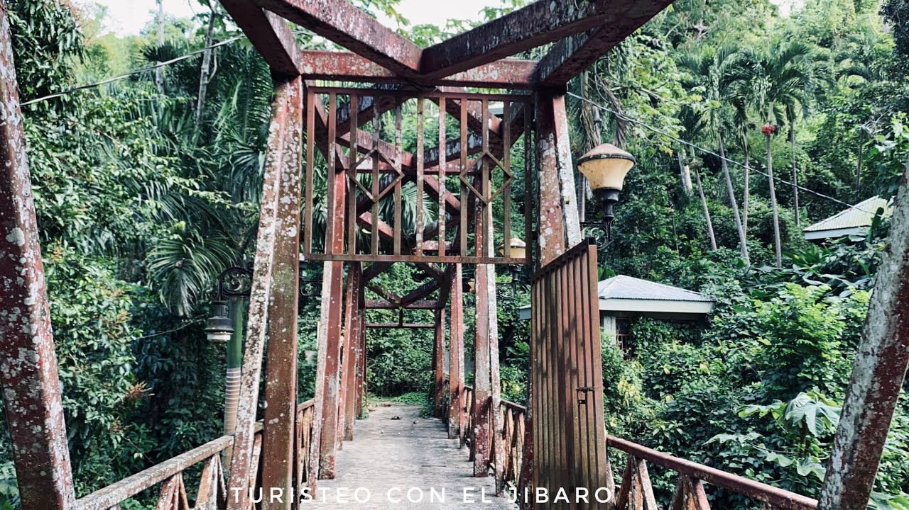

Mirador de Añasco
El mirador de Añasco es una hermosa torre que tiene una vista esplendida sobre el oceano
Pueden visitar el Mirador de Añasco en:
- Direccion: Mirador Rd
Salsipuedes Aventuras
Salsipuedes Aventuras es una atracción estilo cuarto de escape donde grupos de amigos, familiares o compañeros de trabajo intentarán completar una misión resolviendo acertijos, descifrando códigos y encontrando pistas en un escenario estilo película.
Pueden visitar Salsipuedes Aventuras en:
- Direccion: PR-2 km. 141.5 Bo. Quebradalarga, Anasco, 00610
- Numero Telefonico: (787)-365-2523
- Pagina Web: http://www.salsipuedesaventuras.com/
Parque Nacional Tres Hermanos

Playa Tres Hermanos “Parque Nacional Tres Hermanos” se encuentra en el Noroeste de Puerto Rico en el pueblo de Añasco y es un balneario administrado por la Compañía de Parques Nacionales de Puerto Rico.
La playa tiene una extensa costa con aguas cristalinas y una hermosa vista de las montañas al oeste de la Isla. La playa contiene gran cantidad de palmeras y vegetación. La arena es clara, suelta, compuesta de detritos volcánicos, serpentina, cuarzo y algunos detritos de coral.
Pueden visitar el Parque Nacional Tres Hermanos en:
- Direccion: 7RW4+CR9, Puerto Rico Puerto Rico, PR-115, Anasco
- Numero Telefonico: (787)-286-1610
Salto de la Encantada
El Salto de la encantada es una quebrada con una hermosa caída de agua rodeada de una exuberante y verde vegetación. A sus alrededores se construyó un paseo tablado para poder disfrutar del área, tiene gazebos y una réplica del puente antiguo en hierro que aún está sobre el Río Grande de Atasco. Actualmente no se le a dado el mantenimiento debido y el tablado esta destrozado. Cuidado al visitarlo.
Pueden visitar el Salto de la encantada en:
- Direccion: 8V45+868, Unnamed Rd,, Anasco, 00610